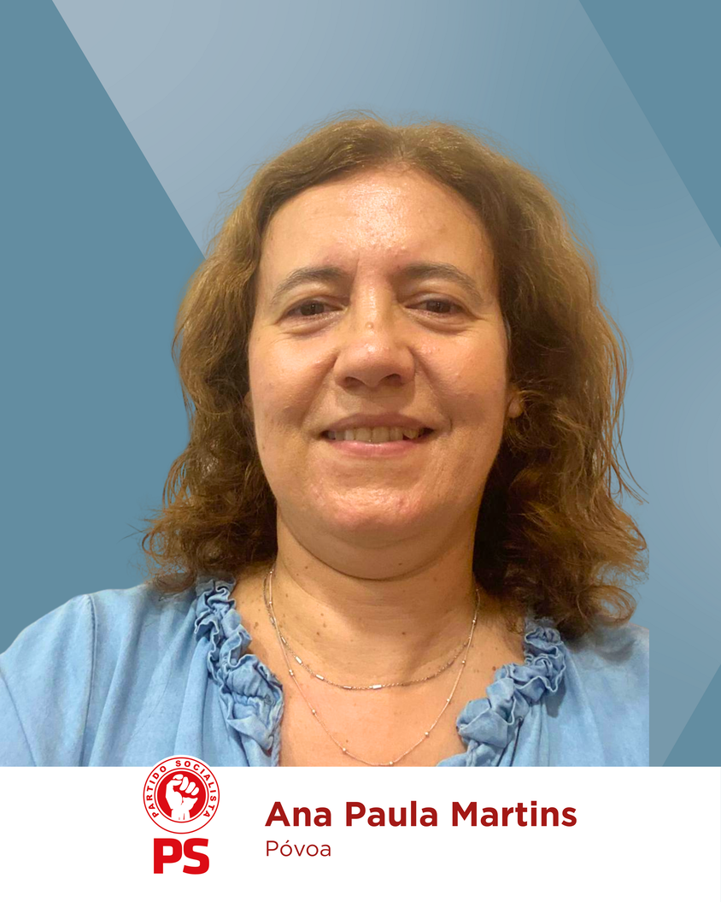
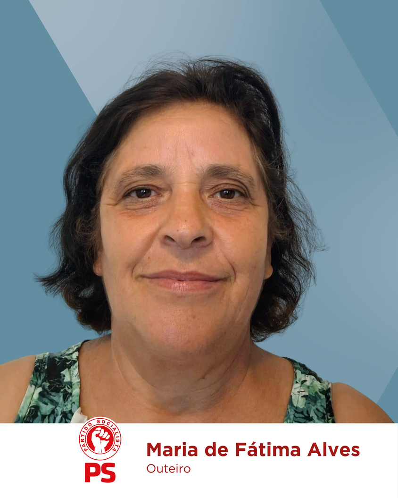
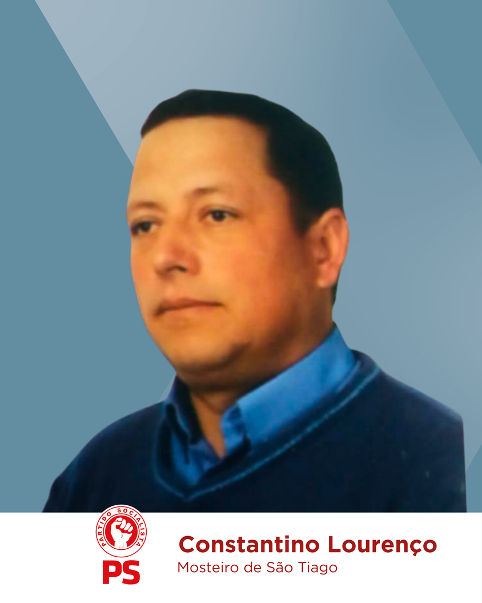

JUNTA DE FREGUESIA DE VÁRZEA DOS CAVALEIROS
Chamo-me Susana Isabel Alves Rodrigues, sou filha da Noémia e do Armando da Póvoa e neta do “Zé da Varanda” da Póvoa. Tenho 44 anos e resido no Pereiro, onde me orgulho de viver numa comunidade marcada pela excelente vizinhança.
Ingressei no curso de Gestão na Universidade Aberta e desenvolvi um percurso profissional consolidado na liderança, gestão e coordenação de projetos.
Sou CEO e Sócia-Gerente de uma empresa de administração de condomínios, função que desempenho desde 2010. Entre 2018 e 2019, exerci o cargo de Diretora Financeira numa residência sénior, contribuindo para a atribuição do prémio PME Líder Empresas. Anteriormente, atuei como Gestora de Projetos de Obras, onde adquiri ampla experiência na coordenação de equipas e na condução de projetos de grande envergadura.
Em paralelo, desde 2023, sou sócia fundadora e membro da Assembleia Geral da Associação dos Amigos da Póvoa, colaborando ativamente em iniciativas de caráter social e comunitário.
Candidato-me a Presidente da Junta de Freguesia com a vontade de colocar a minha experiência profissional e pessoal ao serviço da comunidade e de dar continuidade ao trabalho desenvolvido nos últimos anos. Acredito numa gestão transparente, participativa e próxima das pessoas, onde ouvir, dialogar e encontrar soluções conjuntas seja a prioridade. Quero contribuir para valorizar a freguesia, fortalecer os laços entre vizinhos e garantir que cada decisão reflita o bem-estar e as necessidades de todos.
Juntos, vamos fortalecer Várzea dos Cavaleiros!
JUNTOS, temos Força para Avançar!



Programa
INFRAESTRUTURAS E OBRAS PÚBLICAS
-
 Construção de infraestrutura em lancil para
acondicionamento de contentores de resíduos e ecopontos em
toda a freguesia.
Construção de infraestrutura em lancil para
acondicionamento de contentores de resíduos e ecopontos em
toda a freguesia.
-
Verificação, reparação e manutenção das pontes da
freguesia.
-
Intervenção junto da Câmara para alargamento da rede de
esgotos e água ao domicílio.
-
Intervenção junto da Câmara para melhoria da
sinalização.
-
Iluminação pública – identificar necessidades em toda a
freguesia.
-
Apoio na construção de muro na Associação da Isna de S.
Carlos.
-
Apoio na colocação de pavê no exterior do edifício da
Associação da Isna de São Carlos.
-
Criar valetas em cimento (em algumas ruas) para
escoamento de águas pluviais em diversos lugares da
freguesia.
-
Colocar em funcionamento o Cowork do Mosteiro de S.
Tiago, decorrente da reabilitação da antiga escola
primária.
-
Pugnar pela reabilitação do parque infantil do Mosteiro
de S. Tiago, após o Cowork.
-
Apoio na requalificação do espaço exterior da Associação
do Pereiro (antiga escola primária), se a Associação assim
o entender.
-
Apoio ao Centro Social da Várzea (IPSS) em obras
estruturantes.
-
Iluminação das escadas da Capela em Vale do
Pereiro.
-
Requalificação e melhoria do rés-do-chão do edifício da
Junta de Freguesia.
-
Apoio às Juntas de agricultores, nomeadamente na limpeza
dos regadios em Maljoga e Várzea.
-
Asfaltamento em: Travessa de São José e na ligação entre
a Rua do Barreiros e a Rua principal, sem alargamento da
mesma, na Maljoga.
-
Apoiar projetos para criação de zonas de proteção contra
incêndios, em articulação com a Câmara Municipal e as
Freguesias da Freguesia.
-
Manutenção das alminhas e outro património religioso da
freguesia.
-
Reposição de fontanários, onde haja cedência do espaço
por particulares.
SAÚDE E APOIO SOCIAL
-
Lutar pela continuidade da Extensão de Saúde da Várzea
dos Cavaleiros, com médico e enfermeiro.
-
Estabelecer protocolo com a Câmara para criação de um
projeto de saúde móvel que abranja todos os lugares da
freguesia.
-
Manter protocolos com o Centro Social da Várzea
(transportes escolares, apoios a atividades, cedência de
espaços).
-
Continuação do projeto de ginástica sénior, na Várzea dos
Cavaleiros – no salão da Junta de Freguesia e no Mosteiro
de São Tiago – na associação.
-
Realização de ateliês ocupacionais com a população sénior
no âmbito do projeto Sertã Envolve SG, envolvendo as
diversas Associações da Freguesia.
-
Apoiar famílias carenciadas (continuamente), e intervir
junto da Câmara para obtenção de outros apoios.
-
Apoiar a população em candidaturas para a bilha de gás
social (apoio ao gás).
-
Apoiar crianças da Escola Básica da Várzea em diversas
atividades.
AMBIENTE, PROTEÇÃO CIVIL E PATRIMÓNIO
-
Continuação da limpeza e monitorização da rede viária e
das linhas de água, com o apoio das Associações de
Agricultores e da população.
-
Sensibilizar a população para a importância da
preservação dos caminhos florestais.
TURISMO, CULTURA E IDENTIDADE LOCAL
-
Criação de miradouro no Picoto da Pedreneira.
-
Desenvolver procedimentos para Candidatura de Zona de
Lazer, junto da Ponte das Portelinhas, Mosteiro de S.
Tiago.
-
Desenvolver procedimentos para candidatura de percurso
pedestre ao longo das ribeiras.
-
Lançamento do livro da Várzea dos Cavaleiros.
-
Trazer música, teatro, exposições e artesanato às várias
localidades.
-
Melhoramentos na Zona de Lazer do Boíço, para cumprimento
com as condicionantes impostas pela APA.
-
Destilaria em articulação com a Câmara Municipal
(dependendo da viabilidade legal do projeto).
ASSOCIAÇÕES E COMUNIDADE
-
Apoiar e descentralizar atividades das associações da
freguesia (exposições, artesanato, cultura, etc.).
-
Fomentar a cooperação e comunicação entre associações,
através de atividades conjuntas.
TRANSPORTES E CONECTIVIDADE
-
Continuar a pugnar pela cobertura de rede móvel em toda a
freguesia.
-
Lutar pela melhoria dos transportes públicos.